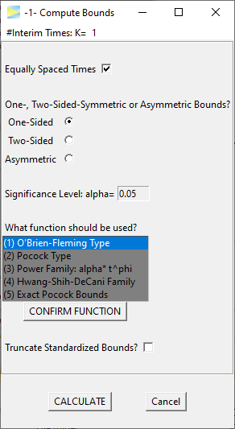
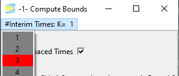
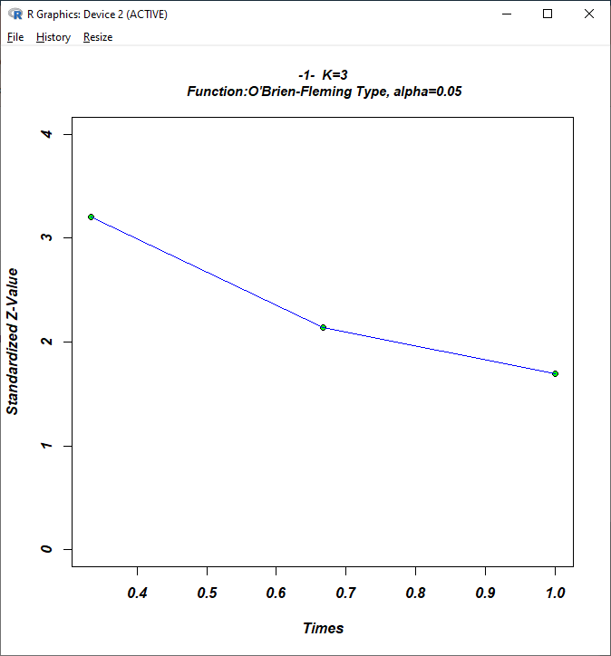
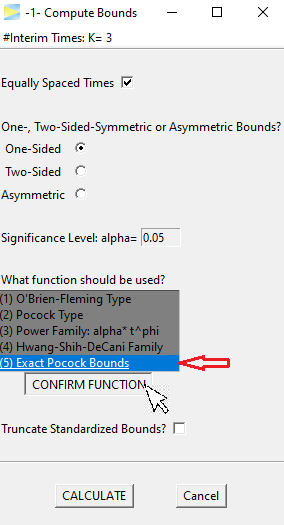
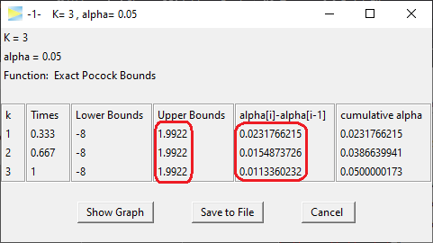
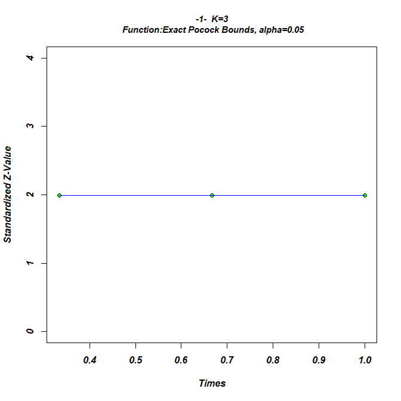
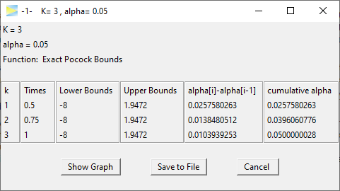
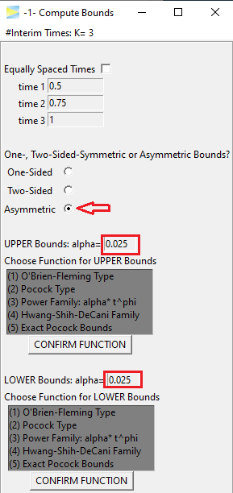
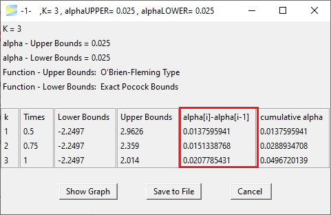
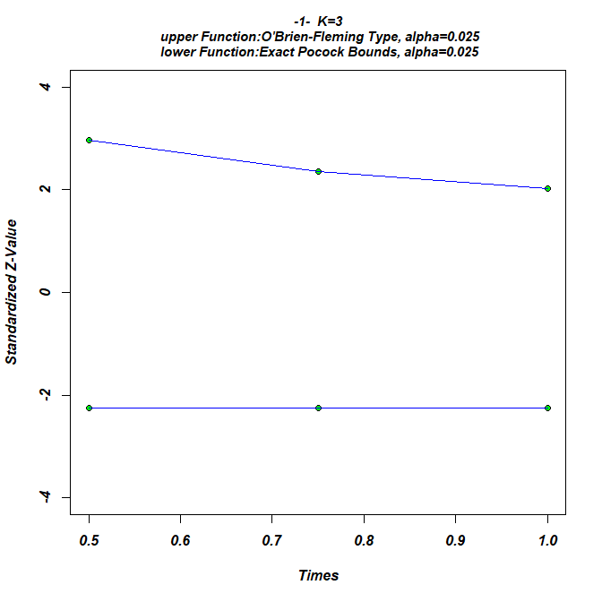

The option -1- menu initially looks as follows.

Single stage
As a first example, let’s hit the CALCULATE button, which should open a new window with the following results.

Since the number stages was set to \(K = 1\), we just calculated one-sided bounds for a simple 1-stage design, which is equivalent to
alpha = 0.05
qnorm(1 - alpha)
# [1] 1.644854O’Brien-Fleming 3-stage design
To obtain a true group sequential design, we have to select \(K > 1\) stages. The number of stages is chosen at the top of the window. Note that in GroupSeq this is called #Interim Times, which means that the final analysis also is treated as an ‘interim time’. Thus, for a 3-stage design, we select \(K = 3\).

Hit CALCULATE to compute the 3-stage design.

In the second to last column, you see how much alpha is spent at each stage, while in the last column you see the cumulative alpha, which should sum up to the overall significance level (here 5%).
Obviously, there are infinitely many ways to split the 5% over the three stages. The default alpha spending strategy in GroupSeq is the O’Brien-Fleming type, which is probably the most popular group sequential design in clinical trials.
As you see, the O’Brien-Fleming is very conservative at the early stages of the study so that only 0.069% of alpha is spent at stage 1. The effect therefore would have to be very large in order to exceed the critical upper bound of 3.2 at stage 1 when 33% of the total sample will have been collected.
To get a visual impression you can click the Show Graph button in the result window which provides the following plot.

The advantage of this conservative strategy is that you still leave enough alpha for the final analysis to reject H0 for significant but moderate effects.
Pocock 3-stage design
Another popular design, which actually had a significant positive impact on the general popularity of group sequential designs in clinical research, is the design by Pocock, which is constructed such the bounds are identical at each stage. Let’s select (5) Exact Pocock Bounds and hit CONFIRM FUNCTION.

When hitting the CALCULATE button, this time we get the following.

The resulting upper bounds are set constant over all stages at 1.99. Obviously this design is more aggressive than the O’Brien-Fleming design in trying to abort early as 0.023% of alpha is already spent at the first stage (see second to last column in above figure).
While the critical bounds are constant over all stages, the spent alpha is not. Rather it is decreasing with each stage. This is “caused” by the sample size, which is increasing on later stages, so that, roughly speaking, it gets less likely under H0 to produce a type I error.
O’Brien-Fleming vs Pocock
When comparing the final stage of both designs, the spent alpha in the O’Brien-Fleming design (0.034%) is roughly three times higher than in the Pocock design (0.011%), which means that if the study is not aborted at one of the interim analysis, once you reach the final stage the effect needs to be much higher in the Pocock design to reject H0 at the final stage.
Beside the statistical power there are other aspects such as the expected sample size that can be taken into consideration when comparing designs which however goes beyond the scope of this vignette. This is also true with respect to the other available designs1, and it is recommended to consult the literature to study the properties of the different designs.
You may have also noted that among the available design functions there is (2) Pocock type, which is is very similar to option (5) Exact Pocock Bounds. The (2) Pocock type is based on the alpha spending approach, which always produces monotonously decreasing bounds and therefore does not yield exact Pocock bounds by definition. Since the Pocock design is very popular, the option of exact Pocock bounds, which are slightly harder to compute, was added to GroupSeq.
Non-equidistant interim times
To adjust interim times, which by default are equally spaced, the correspondin checkmark has to be deselected. 
The times are entered manually, for example, lets start a bit later with the first interim look.

and CALCULATE.

We see that this leads to slightly lower bounds, which seems about right as this design is less aggressive to abort the study early.
Two-Sided bounds
Last but not least, the designs can be calculated for the two-sided symmetric

as well as the two-sided asymmetric case.

Naturally, the alpha is split up symmetrically, but can be customized if needed. Also the alpha spending function has to be set separately for each side. As an example, lets go with O’Brien-Fleming and Pocock again (don’t forget to hit the CONFIRM FUNCTION buttons).

Looking at the stage-wise alpha spending, we literally end up with a mixture of both designs as there is some alpha spend on the early stages but still saved some for the last stage.
So this is mainly what can be done with GroupSeq to construct designs under H0. Next lets see how to calculate probabilities under H1 and specifically to determine the effect size that is required to achieve a certain probability (i.e. power) to detect an existing effect, which can be done via the second menu option: -2- Compute Drift given Power and Bounds
To be exact, these are alpha spending functions, which lead to certain types of designs.↩︎